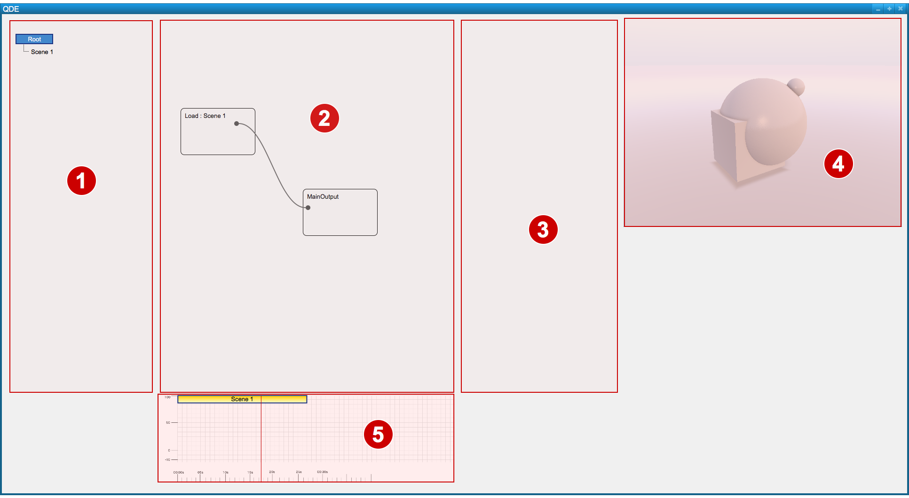
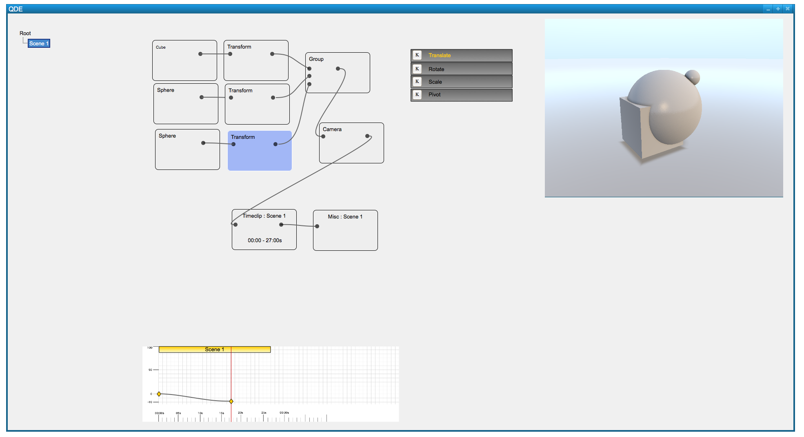
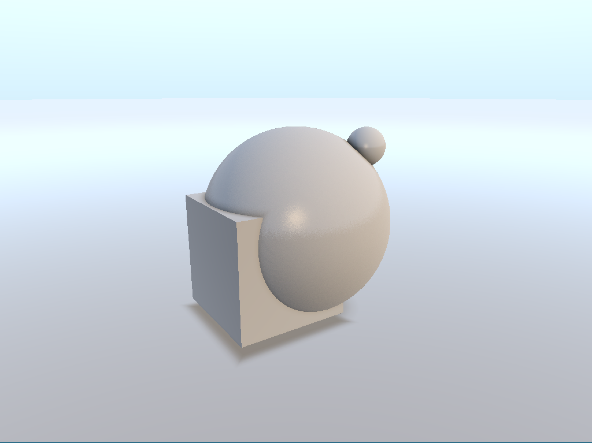
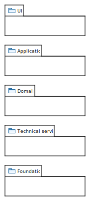
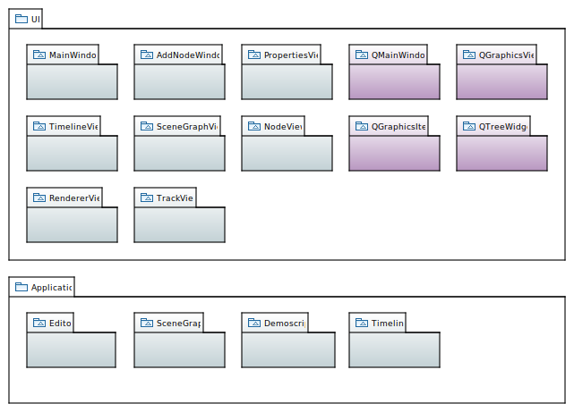
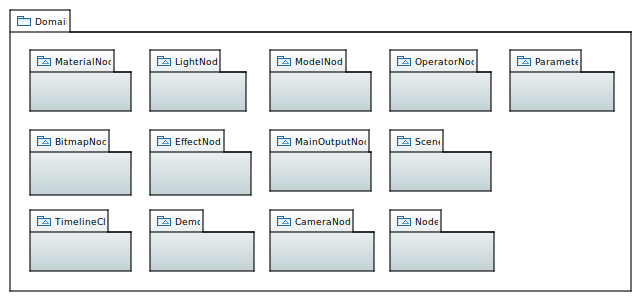
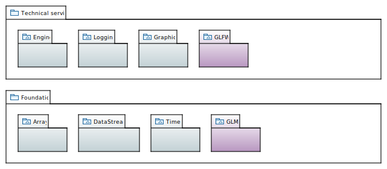
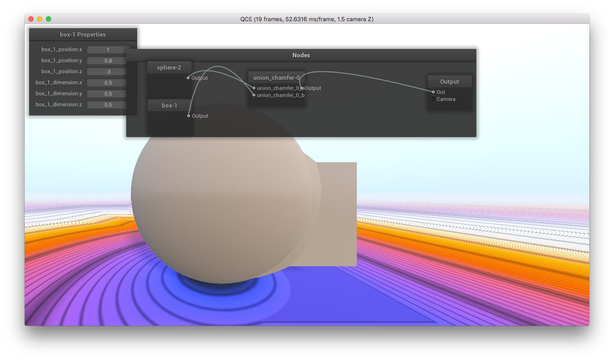

QDE — A visual animation system
Software architecture
Student:
Advisor:
Date:
Sven Osterwalder (ostes2@bfh.ch)
Prof. Clauder Fuhrer (fuhrer@bfh.ch)
2016-08-11

Vision
- Software
-
- Real-time animations
-
- Sphere-Tracing
- Managing and editing
- Allow export and import
- Easily playable
- Be intuitive
- Modular
⇒ 2 components
- Editor
- Player
Vision
Envisioned
Vision
Envisioned
Motivation
Possible outcome
Motivation
Why?
- Powerful GPUs
- "Real-time" ray tracing
-
- Sphere-Tracing
- Quality / Realism
- Easy modeling
Motivation
Problems..
- Easy modeling
-
- In code
- "Conventional" models
- Performance
⇒ Solve them
Software Architecture
A definition
- Set of significant decisions
- Big ideas
-
- Motivations
- Constraints
- Organization
- Patterns
- Responsibilities
- Connections
Software Architecture
Procedure
- Unified Process: Iterative
-
- Extreme Programming
-
- Test-driven development
- Refactoring
- Continuous integration
- Scrum
C. Larman, Applying UML and Patterns, 2004
From vision..
..to architecture
- Requirements
-
- Actors
- Use Cases
- Additional
- Domain model
- Sequence diagrams
- Logical architecture
- Class diagrams
Logical Architecture
Layers

⇒ Relaxed layered architecture
Logical Architecture
Layers: UI & Application

Logical Architecture
Layers: Domain

Logical Architecture
Layers: Technical services & Foundation

From theoretical..
..to practical: Prototype

Prototype
Goal
-
- Model simple scenes
- Provide primitives
- Graph
Prototype
Procedure
-
- Re-compilation of shaders
- Dynamically loading of shader files
- Shader-template
- Graph
Lessons learned
& outlook
- Iterations
- Simplicity
- Patterns
- Document